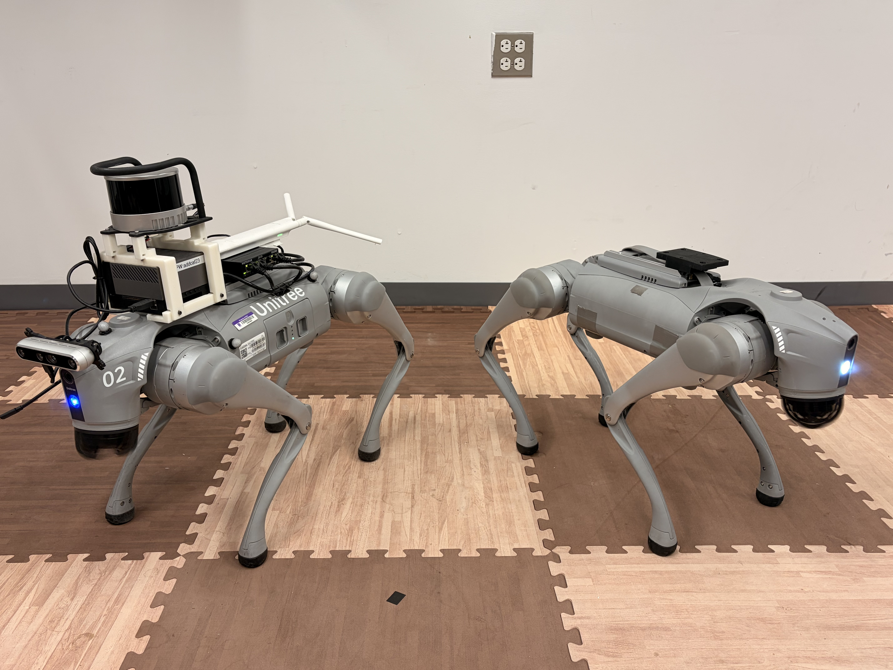
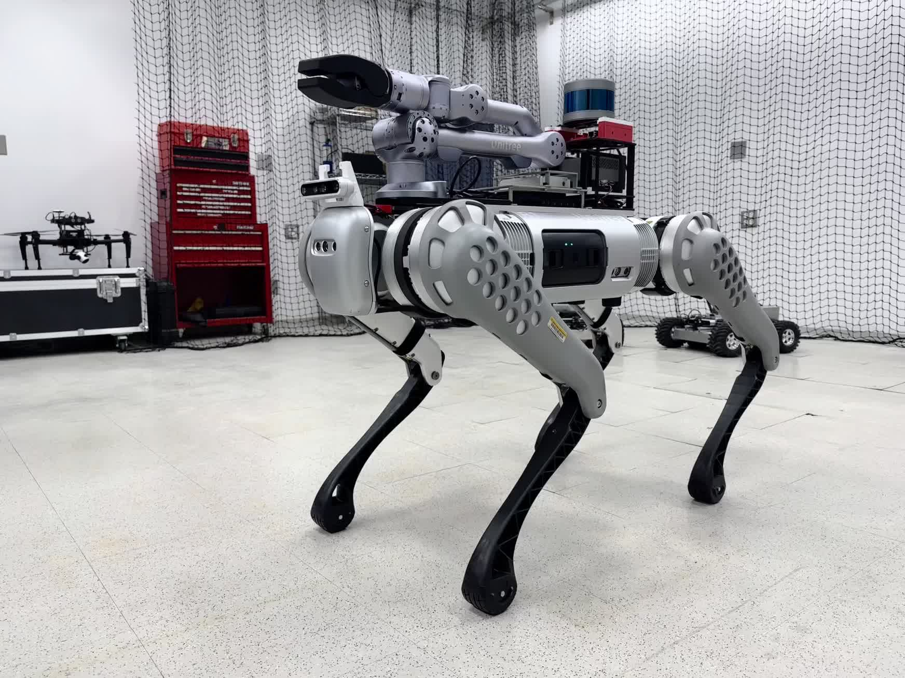
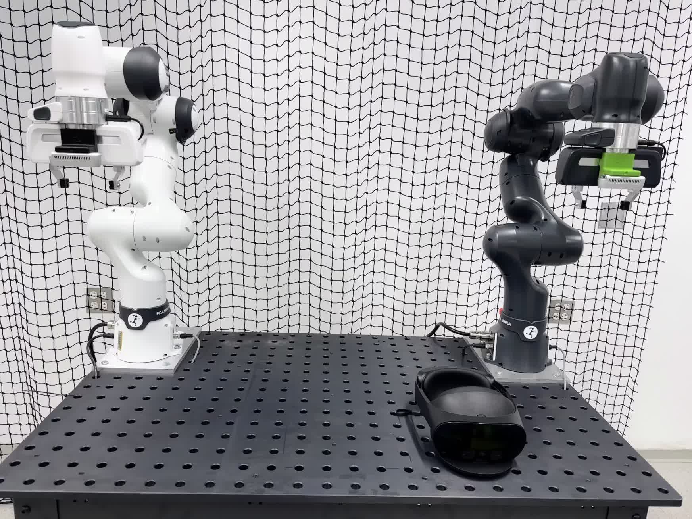
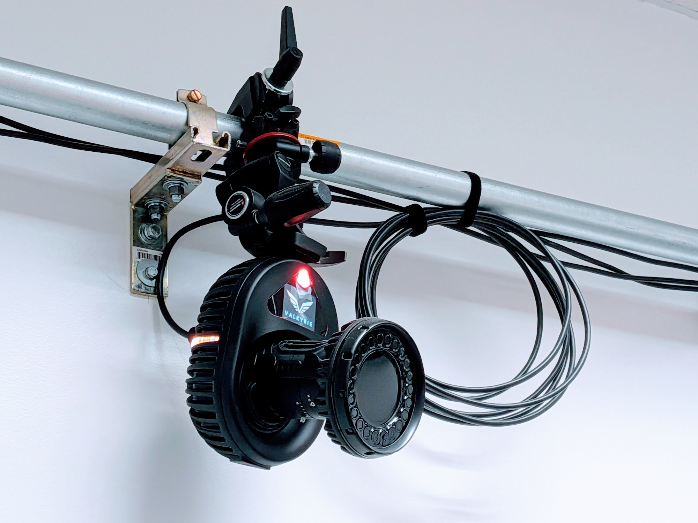

Lab Platforms
Our lab is equipped with a diverse set of robotic platforms and state-of-the-art infrastructure. This hardware enables a broad range of research in legged locomotion, manipulation, navigation, and multi-agent systems. Below are some of our key platforms.

Unitree G1 Humanoid
Humanoid platform with three-fingered hand for locomotion and manipulation.

Unitree Go2 Quadruped x2
Two medium-scale quadrupeds for navigation, locomotion, and multi-robot experiments.

Unitree B1 Quadruped
Heavy-duty quadruped with Unitree Z1 arm for locomotion and mani-pulation in harsh environments.

Franka Emika Panda Arm x3
Three torque-controlled 7-DoF arms for dexterous manipulation.

Vicon Motion Capture System
Vicon Valkyrie 10-camera motion capture system for accurate 3D pose estimation and tracking.